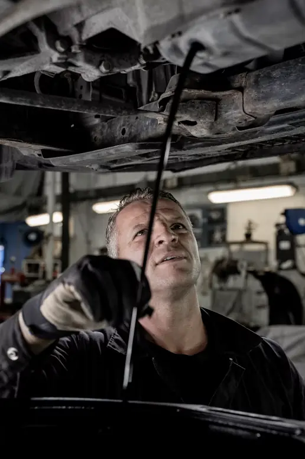

Dale Ferreira
Owner and master tech · 31 years
Diagnosis is his favorite part of the job. Ask him about the Buick that had three wiring harnesses.
- ASE Master
- L1 Advanced Engine
About the shop
Gulfline started in 2008 with two bays, one lift and a promise to explain every repair in plain English. The promise stuck.


Our story
Dale Ferreira opened Gulfline on 22nd Avenue South after fifteen years at a dealership where, in his words, "nobody ever saw the old part." He started texting customers photos of what he found before most people had smartphones that could open them.
Today the shop has six bays, four ASE-certified technicians and a shuttle van that knows every shortcut to downtown. Dale still answers the phone most mornings.
The crew
Every tech here is ASE certified and trains at least 40 hours a year on new systems.
Owner and master tech · 31 years
Diagnosis is his favorite part of the job. Ask him about the Buick that had three wiring harnesses.
Lead technician · 12 years
Brakes, steering and suspension. Known for photos so clear customers frame them.
Technician · 8 years
A/C and electrical. If it blows warm or drains a battery overnight, it goes to Terrell.
Technician · 5 years
Maintenance, tires and alignment. Fastest oil change in the building, by a stopwatch.
The warranty, explained
Whichever comes first. If something we repaired fails, we fix it again at no charge. If you are more than 25 miles away, a partner shop near you handles it and we pay the bill.
★★★★★"They sent me a photo of my brake pad next to a new one. First time a shop ever showed me instead of just telling me."
Renee T.2016 Toyota Camry · Brakes
★★★★★"Dealer quoted me $1,400. Gulfline found a $180 sensor and a loose connector. Honest people."
Priya S.2014 Honda Pilot · Check-engine light
★★★★★"Shuttle picked me up from the office when my car was done. Did not expect that from a repair shop."
Kevin A.2020 Hyundai Tucson · 60k service
★★★★☆"Took a day longer than planned because a part was back-ordered, but they called me twice to keep me updated and gave me a shuttle both days."
Sandra L.2012 Chevy Silverado · Water pump
★★★★★"Jasmine walked me through the inspection photos on my phone. I fixed the red items now and saved the yellow ones for next month."
Omar B.2018 Nissan Rogue · Inspection
★★★★★"Third car I've brought here. Prices match the website and they always finish when they say."
Beth W.2017 Subaru Outback · Alignment
Check-engine light on?